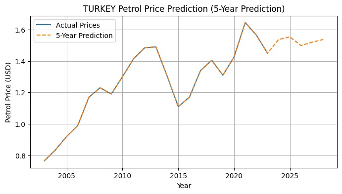
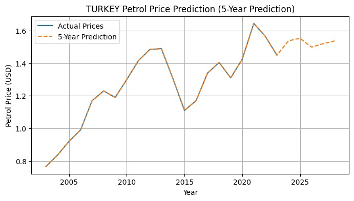

- Pollution
- Fluctuating Nature
1. Pollution
2. Fluctuating Nature
The fluctuating nature can be understood when we understand how geopolitics is involved in this topic. The whole world is an interconnected mesh, that is what happens somewhere always seems to also affect the other regions around the world. Now, generally, oil is completely dominated by a few countries namely Saudi Arabia, Russia, Iran etc. Our thesis helps us understand how the relationships between these countries helps us understand the variations in oil prices.
The Working
The way we had done our report is basically, we had found all the investments of the supposedly friendly and unfriendly countries to Saudi Arabia, in order to determine whether geopolitics would be a factor. To be able to determine this, we have chosen 6 countries, INDIA, USA, CHINA, ISRAEL, TURKEY, YEMEN. Now, we had collected data about the investment by these countries into Saudi and the investment of Saudi into these countries from 2003 to 2023. Now, mainly we had considered 3 types of monetary transfers. One is direct trade, followed by military partnerships and exchanges. After this, we also considered the political tensions between the countries and tried to understand the economic impact of these actions. Basically, with the help of this, we were able to get a general idea about how the investment portfolio of these countries are as well as how the relations cause monetary changes. After this, we had also scaled the Investment values based on the power conversion. That is if Saudi Arabia invests 1 million dollars in USA, it is much more worthwhile for it to invest the same amount in places like INDIA or CHINA, as not only will that 1 million help much more in there, but also, Saudi would be able to receive much more. Thus, using special indexes like PPP indexes, we were able to make the conversions into something much more meaningful that is how the monetary investments had helped the country. This was specially done for investments as generally, infrastructure etc helps create livelihood in the area where the money is being invested. This will cause employment and so many other things and means a lot more than just some monetary investment. Thus, with the help of all this data collection, not only were we able to train a model that is able to predict the future oil price trends in these countries but also link geopolitics and the volatile nature of the monetary value of oil.
Predictions
 

Backing of the Thesis
But how is this thesis backed up? Mainly, it is backed by our analysis that generally, a high investment means stable oil price rather than a low oil price and a low investment means unstable oil price that can reach high values. Now, to prove this point, we have calculated the correlation coefficient between the frequency of certain amount of price fluctuation to the investment amount. We had seen that the correlation values had a range and that tended to be between -0.59 to -0.67. The -ve correlation indicates that there is a inverse relation between these parameters, that is if the investment is low, more fluctuation, and if the investment is high, less fluctuation.
Insights
USA
According to the data we have collected, there has been a good amount of investment rappo between USA and Saudi Arabia, because of which the fuel price stability has been quite good considering the purchasing power of the individuals. One of the reasons for this price stability can also be due to the high presence of oil reserves in the USA itself.
INDIA
INDIA doesn’t have major oil reserves and thus is quite heavily depended on the imports of these fossil fuels. Because of the great diplomatic relations with the other countries, we have been able to maintain a great consistent fuel price. For example, we were able to secure a deal of $100 billion in the year 2019 with Saudi Arabia related to investments.
CHINA
CHINA has also been able to maintain great oil prices throughout the years. One of the main reasons due to the consistent oil prices is due to the vast amount of investment rappo between the oil producing countries as well as CHINA. The amount of trade investment itself had crossed $108.4 billion in the year 2023.
TURKEY
If we see the cost of petrol per litre, it is quite high that is reaching $1.9/litre during 2022. Even though it has oil reserves, due to its consumption being way higher, it produces only 7% of the oil it consumes. And due to the presence of conflicts with Saudi, they are unable to get a good price for oil thus causing a high oil price.
YEMEN
The oil prices in YEMEN has not been stable, and rather has been increasing since the beginning. Even though it settled down a little bit after year 2018, it is mentioned that it had peaked at $1.6/liter in the year 2014. This is an exceptionally high price of oil especially in a place with low purchasing power. Even though there is oil, due to the bad economic stability and the bad ties with the oil producing countries, it is unable to get a good price of oil thus making the oil price extremely high.
ISRAEL
The oil prices in ISRAEL are extremely high and are not at all advisable for the people due to their purchasing power. It is almost double that of USA, and the prices continues to increase. The current price is at $2.5/litre which is almost triple that of the USA, while the purchasing power of the individuals is about 1/5 of that of the USA citizens. And it doesn’t have that great oil reserves because of which it imports 99% of the oil it consumes. And due to the absence of proper formal diplomatic relations between Saudi and ISRAEL, there is no chance for it to even receive any oil at a better price.
Thus, our point is that a country can never sustainably grow if it has to depend on someone else to get its basic functions done. Thus, it is the time to switch to clean and green energy as that is something that can be produced withing ones own country and will be at a much more affordable price. In this way, we wouldn’t have to be at the mercy of the other countries and we can focus on our problems rather than